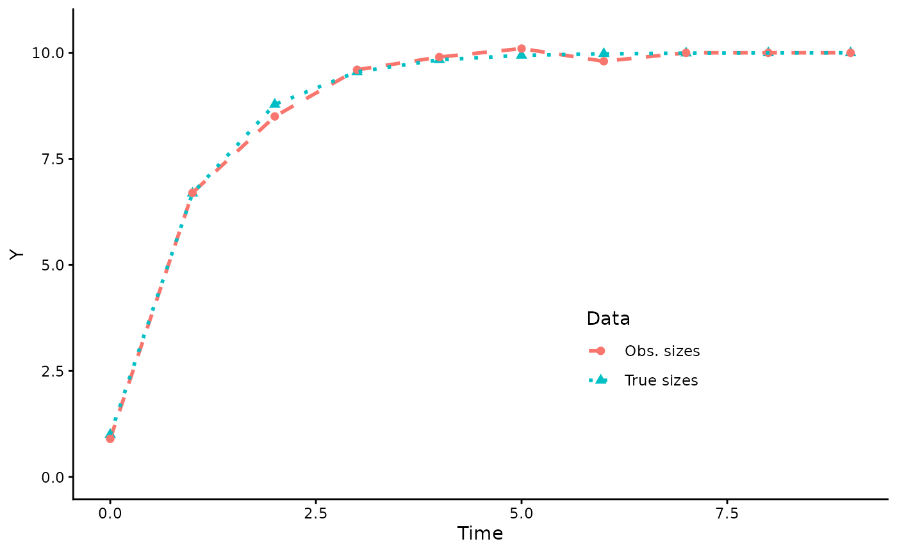
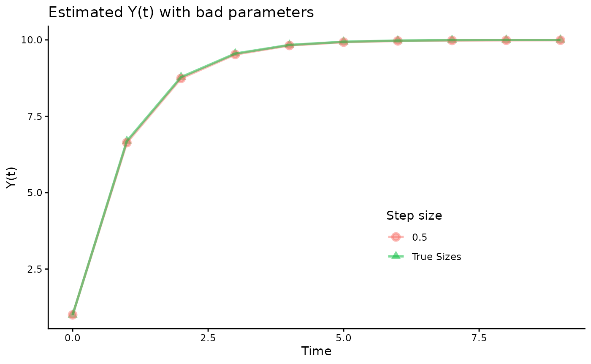

Load dependencies
#remotes::install_github("traitecoevo/hmde")
library(hmde)
library(dplyr)
#>
#> Attaching package: 'dplyr'
#> The following objects are masked from 'package:stats':
#>
#> filter, lag
#> The following objects are masked from 'package:base':
#>
#> intersect, setdiff, setequal, union
library(ggplot2)
library(deSolve)
library(mixtools)
#> mixtools package, version 2.0.0.1, Released 2022-12-04
#> This package is based upon work supported by the National Science Foundation under Grant No. SES-0518772 and the Chan Zuckerberg Initiative: Essential Open Source Software for Science (Grant No. 2020-255193).
library(MASS)
#>
#> Attaching package: 'MASS'
#> The following object is masked from 'package:dplyr':
#>
#> selectThis vignette demonstrates an interaction between errors from numerical integration methods and MCMC sampling that produces a bimodal posterior distribution as a result of numerical error. We stumbled across the problem and are documenting it here, but account for it in the package through either using analytic solutions, or numerical methods with adaptive step sizes where analytic solutions are not available.
The underlying issue is that if, given errors in the chosen numerical integration method, two sets of parameters for a differential equation give “the same” (more in a second) output for the MCMC sampler will be unable to meaningfully distinguish the parameter combinations. What you see in practice is chains converging to extremely different parameter combinations, one of which is the `true’ combination, the other of which is wrong but produces the same values due to the numerical error. Thus, there is a form of non-identifiability that arises from numerical errors in a longitudinal model based on Equation (1) that are separate to other issues of non-identifiability, and currently under-explored in the literature. In this demonstration we use a Runge-Kutta 4th order numerical method () with different step sizes to show that even ‘small’ step sizes can give problems.
It is important to state that “the same” values in this context means within statistical error of each other. We assume that our data consists of observations of the form at time that look like and have some finite level of precision. The numerical method may produce estimated values that differ by some amount that is much smaller than the level of precision or observation error for the different parameter combinations, but due to the imprecision of the measurement process the MCMC sampler cannot meaningfully distinguish the estimates.
For this demonstration we will simulate data as though it is measured in centimetres. We use rounding to produce simulated data with measurement precision of 0.1cm, and error of , analogous to the 1mm measurement precision and approximate standard deviation of the real-world source data used in O’Brien, Warton, and Falster (2024).
The model
We are implementing a longitudinal model of the form in Equation (1) within a hierarchical Bayesian longitudinal model where Equation (2) is known to produce pathological behaviour from numerical methods (Butcher 2016), so serves as an ideal simple example of the interaction between those pathologies and the MCMC sampling process. For the purpose of estimation we shift Equation (2) by the mean observed size which gives then the back-transformation
We are attempting to estimate the parameters and from observations , which is based on estimating given the prior distribution
As we are looking at a single individual, we have prior distributions for the default parameters which are and enforce .
Simulating data
For this demo code we use
and
,
which gives an asymptotic size of 10. If you wish to experiment with
other values, input them in the next block and the rest will run based
on that. We use the analytic solution to simulate true sizes over time,
then add measurement error and round to the chosen measurement precision
of 0.1cm to give a sequence of observations over time that become the
y_obs data for the model fit. Notice that
y_obs can produces values that are bigger than the
theoretical asymptotic size
due to error.
#Change these values to change the model parameters. Must be positive values.
beta_0 <- 10
beta_1 <- 1
#True initial condition
true_y_0 <- 1
max_time <- 9
time <- 0:max_time
#Analytic solution
analytic_solution <- function(x = NULL, pars = NULL){ #Pars is list of beta_0, beta_1, y_0
return(
(pars[[1]]/pars[[2]]) + (pars[[3]] - (pars[[1]]/pars[[2]])) * exp(-pars[[2]] * x)
)
}
true_pars <- list(
beta_0 = beta_0,
beta_1 = beta_1,
true_y_0 = true_y_0
)
true_args_list <- list(pars = c(beta_0,
beta_1,
true_y_0))
y_true <- analytic_solution(time, true_pars)From the analytic solution we produce observations by adding measurement error and rounding to a precision of 0.1.
#Produce observations with error and limited precision
y_obs <- round(y_true + rnorm(length(y_true), 0, 0.1), digits = 1)
#Unrounded data if needed
#y_obs <- y_true + rnorm(length(y_true), 0, 0.1)
#Observed data frame
obs_data_frame <- tibble(
time = time,
y_obs = y_obs,
obs_index = 1:length(y_obs)
)
#Have a look at the true and 'observed' data
plot_data <- tibble(
x = c(time, time),
y = c(y_true,y_obs),
Data = c(rep("True sizes", times = length(y_true)),
rep("Obs. sizes", times = length(y_obs)))
)
sizes_over_time <- ggplot(plot_data, aes(x = x, y = y, group = Data)) +
geom_point(aes(colour = Data, shape = Data), size = 2) +
geom_line(aes(colour = Data, linetype = Data), linewidth = 1) +
scale_linetype_manual(values = c("dashed", "dotted")) +
ylim(0, 10.5) +
labs(x = "Time", y = "Y") +
theme_classic() +
theme(legend.position = "inside",
legend.position.inside = c(0.7, 0.3))
sizes_over_time
#Have a look at the observations against the analytic solution
analytic_observed <- ggplot(obs_data_frame, aes(x = time, y = y_obs)) +
geom_function(fun=analytic_solution, args = true_args_list,
linewidth = 1, colour = "black") +
geom_point(colour = "darkorchid", size = 3) +
geom_line(colour = "darkorchid", linewidth = 1,
linetype = "dashed") +
labs(x = "Time", y = "Y",
title = "Data simulation") +
ylim(0, 10.5) +
theme_classic()
analytic_observedA note on error and precision: the same bad behaviour occurs even if you use unrounded data with all the precision R offers and much smaller error. You can test this by uncommenting the line that rounds the data and/or changing the measurement error standard deviation. The chosen values, and rounding, are intended to demonstrate that this is a problem that may occur with realistic precision and error.
Implementing models and collecting posterior estimates
In this section we are going to run a sequence of sets of models. The first batch is about checking for the existence of bimodal posterior distributions across different step sizes for the same numerical method. We then use a different numerical method to see if the problem persists. Lastly, we use different means in the parameter priors to see if the posterior can be constrained by such methods.
Step size data
We’re going to run 100 fits with a step size of 1 using the custom RK4 solver and a single chain each. Each chain is expected to converge to a parameter combination that gives estimated close to the analytic solution, but which combination is converged to is random. We do single chains because each can fall into the numerical error trap, and the easiest way to identify that trap is to extract the estimates afterwards.
Each fit takes a few seconds to run, so allow several minutes for the following block. There are likely to be diagnostic problems but that is part of what we are here to explore so we will be ignoring them. Divergent transitions in particular are to be expected when we have the very different parameter estimates we see. Results are hidden for this block.
runs <- 100
step_size = 0.5
par_est_tibble <- tibble(run = c(),
step_size = c(),
beta_0 = c(),
beta_1 = c())
for(i in 1:runs){
#Run the model
suppressWarnings(
fit <- hmde_model("affine_single_ind") |>
hmde_assign_data(n_obs = nrow(obs_data_frame),
y_obs = obs_data_frame$y_obs,
obs_index = obs_data_frame$obs_index,
time = obs_data_frame$time,
y_bar = mean(obs_data_frame$y_obs),
step_size = step_size,
int_method = 1) |> #RK4
hmde_run(chains = 1, cores = 1, iter = 2000)
)
#Extract parameter estimates
ests <- hmde_extract_estimates(fit = fit,
input_measurement_data = obs_data_frame)
temp <- tibble(
run = i,
step_size = step_size,
beta_0 = ests$individual_data$ind_beta_0_mean,
beta_1 = ests$individual_data$ind_beta_1_mean
)
par_est_tibble <- rbind(par_est_tibble, temp)
} Analysis
We are going to fit a finite mixture model to tell us about the clustering in the posterior distributions. We assume that there are two clusters (you can check with scatter plots), that one is close to the true values and the other some distance away with much larger estimates for both, and use the mean for rows where $\hat{\beta_}_0 > mean(\hat{\beta_}_0)$ as our starting value for the iterative process to avoid singularities. The overall mean of the estimates works as a threshold for extreme values because of the bimodality and distance between clusters.
step_size_mix_models <- list()
step_size_mix_model_plots <- list()
step_size_mix_models_par_ests <- tibble(
good_beta_0 = c(),
good_beta_1 = c(),
error_beta_0 = c(),
error_beta_1 = c(),
step_size = c(),
error_fraction = c(),
dist = c()
)
for(i in 1:length(unique(par_est_tibble$step_size))){
#Get data for single step size
step_size_selected <- unique(par_est_tibble$step_size)[i]
analysis_data <- par_est_tibble %>%
filter(step_size == step_size_selected)
#Get some extreme estimates
possible_error <- analysis_data %>%
filter(beta_0 > mean(analysis_data$beta_0))
#To speed up the iterative algorithm we provide some initial conditions
mu <- list( #Means from true parameters and extreme estimates
true = c(beta_0, beta_1),
error = c(mean(possible_error$beta_0),
mean(possible_error$beta_1))
)
#Fit multivariate normal finite mixture model to the estimates
step_size_mix_models[[i]] <- mvnormalmixEM(x = analysis_data[,c(3,4)], mu = mu)
print(paste0("Summary of mixture model for step size ", step_size_selected))
print(summary(step_size_mix_models[[i]]))
step_size_mix_model_plots[[i]] <- plot(step_size_mix_models[[i]],
whichplots = 2,
xlab2 = "Beta 0",
ylab2 = "Beta 1")
dist_table <- tibble( #Data to calculate distance
b_0 = c(step_size_mix_models[[i]]$mu[[2]][1],
step_size_mix_models[[i]]$mu[[1]][1]),
b_1 = c(step_size_mix_models[[i]]$mu[[2]][2],
step_size_mix_models[[i]]$mu[[1]][2])
)
#Extract values
step_size_mix_models_par_ests_temp <- tibble(
good_beta_0 = step_size_mix_models[[i]]$mu[[1]][1],
good_beta_1 = step_size_mix_models[[i]]$mu[[1]][2],
error_beta_0 = step_size_mix_models[[i]]$mu[[2]][1],
error_beta_1 = step_size_mix_models[[i]]$mu[[2]][2],
step_size = step_size_selected,
error_prob = step_size_mix_models[[i]]$lambda[2],
dist = dist(dist_table)
)
step_size_mix_models_par_ests <- rbind(step_size_mix_models_par_ests,
step_size_mix_models_par_ests_temp)
}
#> number of iterations= 3
#> [1] "Summary of mixture model for step size 0.5"
#> summary of mvnormalmixEM object:
#> comp 1 comp 2
#> lambda 0.670000 0.33000
#> mu1 9.810421 49.16390
#> mu2 0.980554 4.92054
#> loglik at estimate: 992.063
#> NULL
#Have a look at the estimates
step_size_mix_models_par_ests
#> # A tibble: 1 × 7
#> good_beta_0 good_beta_1 error_beta_0 error_beta_1 step_size error_prob dist
#> <dbl> <dbl> <dbl> <dbl> <dbl> <dbl> <dist>
#> 1 9.81 0.981 49.2 4.92 0.5 0.33 39.550…We get bimodality in the posterior distributions. If you look at multiple step sizes you will see that smaller step sizes push the second cluster further away. Bias in the estimates closest to the true values is due to the same measurement error in the ‘observed’ data for all the fits. The second mode in the estimates arises from the numerical integration error as we will verify shortly. The extreme bimodality of the posterior is consistent behaviour, even though the point of the second mode shifts based on the step size.
Some aesthetics before plots.
legend_spec <- tibble(
step_size_name = c("0.5", "0.25", "0.125"),
step_size = c(0.5, 0.25, 0.125),
x = c(-10, -10, -10),
y = c(-10, -10, -10),
colours = c("#f8766d", "#00ba38", "#609cff"),
linetypes = c("longdash", "dashed", "dotted"),
shapes = c(19, 17, 15)
)
legend_spec_with_true <- tibble(
step_size_name = c("0.5", "0.25", "0.125", "True pars"),
step_size = c(0.5, 0.25, 0.125, NA),
x = c(-10, -10, -10, -10),
y = c(-10, -10, -10, -10),
colours = c("#f8766d", "#00ba38", "#609cff", "black"),
linetypes = c("longdash", "dashed", "dotted", "solid"),
shapes = c(19, 17, 15, 3)
)
for(i in 1:nrow(legend_spec)){
fancy_name_no_step_size <-
paste0("Beta_0 = ",
signif(step_size_mix_models_par_ests$error_beta_0[i],
digits = 3),
",\n Beta_1 = ",
signif(step_size_mix_models_par_ests$error_beta_1[i],
digits = 3))
legend_spec$fancy_name_no_step_size[i] <- fancy_name_no_step_size
legend_spec_with_true$fancy_name_no_step_size[i] <- fancy_name_no_step_size
fancy_name <- paste0("Step size ", step_size_mix_models_par_ests$step_size[i],
"\n", fancy_name_no_step_size)
legend_spec$fancy_name[i] <- fancy_name
legend_spec_with_true$fancy_name[i] <- fancy_name
}
#> Warning: Unknown or uninitialised column: `fancy_name_no_step_size`.
#> Unknown or uninitialised column: `fancy_name_no_step_size`.
#> Warning: Unknown or uninitialised column: `fancy_name`.
#> Unknown or uninitialised column: `fancy_name`.
legend_spec_with_true$fancy_name_no_step_size[4] <-
paste0("Beta_0 = ",
beta_0,
",\n Beta_1 = ",
beta_1)
legend_spec_with_true$fancy_name[4] <-
paste0("True values\n Beta_0 = ",
beta_0,
",\n Beta_1 = ",
beta_1)We use scatter plots of the clusters for qualitative analysis. As the clusters are so distant from each other, and so tight around their means, we separate them out for plots. The mixture models gives a classification of each point in the data that we use to filter observations. As the clusters are so distant we can use other heuristics such as $\hat{\beta_}_0 > 2\beta_0$ which agree perfectly with the cluster analysis.
The contours over the scatter plot come from data simulated from the cluster’s multivariate normal distribution identified by the finite mixture model.
scatterplot_errors_only <- list()
scatterplot_good_only <- list()
for(i in 1:length(unique(par_est_tibble$step_size))){
step_size_select <- unique(par_est_tibble$step_size)[i]
plot_data <- par_est_tibble %>%
filter(step_size == step_size_select)
#Get classification from mixture model
plot_data$good_est <- step_size_mix_models[[i]][["posterior"]][,1]
error_ests_scatter <- plot_data %>%
filter(!as.logical(good_est))
good_ests_scatter <- plot_data %>%
filter(as.logical(good_est))
#Scatter plot of erroneous parameters
xpos <- (min(error_ests_scatter$beta_0) +
0.2*(max(error_ests_scatter$beta_0) -
min(error_ests_scatter$beta_0)))
ypos <- (max(error_ests_scatter$beta_1) -
0.1*(max(error_ests_scatter$beta_1) -
min(error_ests_scatter$beta_1)))
norm_data <- as.data.frame(mvrnorm(n = 10000,
mu = step_size_mix_models[[i]][["mu"]][[2]],
Sigma = step_size_mix_models[[i]][["sigma"]][[2]]))
names(norm_data) <- c("beta_0", "beta_1")
scatterplot_errors_only[[i]] <- ggplot(data = error_ests_scatter,
aes(x = beta_0, y = beta_1)) +
geom_point(colour = legend_spec$colours[i],
shape = legend_spec$shapes[i],
alpha = 0.5,
size = 2) +
geom_density_2d(data = norm_data, colour = "black") +
labs(x = "beta_0 est.",
y = "beta_1 est.",
title = "Second cluster") +
annotate("text", x = xpos, y = ypos,
label = paste0("Probability: \n",
step_size_mix_models_par_ests$error_prob[i])) +
theme_classic()
#Scatter plot of good parameter estimates
xpos <- (min(good_ests_scatter$beta_0) +
0.2*(max(good_ests_scatter$beta_0) -
min(good_ests_scatter$beta_0)))
ypos <- (max(good_ests_scatter$beta_1) -
0.1*(max(good_ests_scatter$beta_1) -
min(good_ests_scatter$beta_1)))
norm_data <- as.data.frame(mvrnorm(n = 10000,
mu = step_size_mix_models[[i]][["mu"]][[1]],
Sigma = step_size_mix_models[[i]][["sigma"]][[1]]))
names(norm_data) <- c("beta_0", "beta_1")
scatterplot_good_only[[i]] <- ggplot(data = good_ests_scatter,
aes(x = beta_0, y = beta_1)) +
geom_point(colour = legend_spec$colours[i],
shape = legend_spec$shapes[i],
alpha = 0.5,
size = 2) +
geom_density_2d(data = norm_data, colour = "black") +
labs(x = "beta_0 est.",
y = "beta_1 est.",
title = "First cluster") +
annotate("text", x = xpos, y = ypos,
label = paste0("Probability: \n",
(1-step_size_mix_models_par_ests$error_prob[i]))) +
theme_classic()
}We can double-check the numerical error by using an independent
solver with the same step size. We use the deSolve package
which has an implementation of RK4 and allows us to choose the step
sizes using the time parameter.
#install.packages("deSolve")
library(deSolve)
#Create DE function
DE <- function(Time, State, Pars) { #Implementation of DE
with(as.list(c(State, Pars)), {
dY <- beta_0 - beta_1 * Y
return(list(c(dY)))
})
}Second cluster analysis
We want to look at the behaviour of the numerical method for the bad estimate clusters. To do so we project forward from the initial condition using the chosen step size, bad parameter combination, and see what happens. We can compare the numerical solution to both the true sizes over time, and to the analytic solution with those same bad parameter estimates.
First we generate the numerical and analytic solution data.
yini <- c(Y = true_y_0) #Initial condition
y_over_time <- tibble(model="True Sizes",
y_analytic = y_true,
y_numeric = y_true,
time = 0:max_time,
beta_0_par = beta_0,
beta_1_par = beta_1
)
#Generate Y(t) with RK4
for(i in 1:nrow(step_size_mix_models_par_ests)){
pars_combo <- c(beta_0 = step_size_mix_models_par_ests$error_beta_0[i],
beta_1 = step_size_mix_models_par_ests$error_beta_1[i])
times <- seq(0, max_time, by = step_size_mix_models_par_ests$step_size[i])
solution_pars <- c(pars_combo, true_y_0)
y_true_temp <- analytic_solution(times, solution_pars)
numerical_output <- ode(yini, times, DE, pars_combo, method = "rk4")
y_over_time_temp <- tibble(
model = step_size_mix_models_par_ests$step_size[i],
y_analytic = y_true_temp,
y_numeric = numerical_output[,2],
time = times,
beta_0_par = step_size_mix_models_par_ests$error_beta_0[i],
beta_1_par = step_size_mix_models_par_ests$error_beta_1[i]
)
y_over_time <- rbind(y_over_time, y_over_time_temp)
}Here is a figure that shows all of the estimated sizes over time for the bad parameter combinations across different step sizes, compared to the true values.
y_over_time_filtered <- y_over_time %>%
filter(time %in% 0:max_time)
#Plot sizes over time for all models
compare_sizes_over_time <- ggplot(y_over_time_filtered,
aes(x=time, y=y_numeric, group_by = as.factor(model))) +
geom_point(aes(colour = as.factor(model),
shape = as.factor(model)),
alpha=0.5, size = 2, stroke = 1.5) +
geom_line(aes(colour = as.factor(model)), alpha=0.5, linewidth = 1) +
scale_colour_manual(values = legend_spec_with_true$colours) +
scale_shape_manual(values = legend_spec_with_true$shapes) +
labs(x = "Time", y = "Y(t)", title = "Estimated Y(t) with bad parameters",
colour = "Step size", shape = "Step size") +
theme_classic() +
theme(legend.position = "inside",
legend.position.inside = c(0.7, 0.3))
compare_sizes_over_time These are indistinguishable values. If you look extremely closely you get some deviation due to parameter bias, but that is not statistically relevant to the process.
To demonstrate that a smaller step size to test the method is enough to identify bad estimates, we show that RK4 with step size 0.001 diverges from the true sizes over time. The lines in this plot are based on the small step size numerical estimates, while the points come from the values for the discrete observation times.
#Generate y(t) with RK4 given the parameter estimates
y_over_time_smallstep <- tibble(model=legend_spec_with_true$fancy_name[4],
y_hat = y_true,
time = 0:max_time
)
for(i in 1:nrow(step_size_mix_models_par_ests)){
pars_combo <- c(beta_0 = step_size_mix_models_par_ests$error_beta_0[i],
beta_1 = step_size_mix_models_par_ests$error_beta_1[i])
times <- seq(0, max_time, by = 0.001)
numerical_output <- ode(yini, times, DE, pars_combo, method = "rk4")
y_over_time_temp <- tibble(
model = legend_spec_with_true$fancy_name_no_step_size[i],
y_hat = numerical_output[,2],
time = times
)
y_over_time_smallstep <- rbind(y_over_time_smallstep, y_over_time_temp)
}
point_data <- y_over_time_smallstep %>%
filter(time %in% 0:max_time)
#Plot sizes over time
compare_sizes_over_time_smallstep <- ggplot(y_over_time_smallstep,
aes(x=time, y=y_hat, grouping = as.factor(model))) +
geom_line(aes(colour = as.factor(model),
linetype = as.factor(model)), alpha=0.5, linewidth = 1) +
geom_point(data = point_data,
aes(colour = as.factor(model),
shape = as.factor(model)),
alpha=0.5, size = 2, stroke = 1.5) +
geom_function(fun=analytic_solution, args=true_args_list,
colour="black",
linetype = "solid",
linewidth=1) +
scale_shape_manual(values = legend_spec_with_true$shapes) +
scale_colour_manual(values = legend_spec_with_true$colours) +
scale_linetype_manual(values = c(legend_spec$linetypes, NA)) +
labs(x = "Time", y = "Y(t)", title = "Small step size",
colour = "Parameters",
shape = "Parameters",
linetype = "Parameters") +
theme_classic() +
theme(legend.position = "inside",
legend.position.inside = c(0.7, 0.4),
legend.key.spacing.y = unit(2, 'mm')) +
guides(colour = guide_legend(byrow = TRUE))
compare_sizes_over_time_smallstep
#> Warning: Multiple drawing groups in `geom_function()`
#> ℹ Did you use the correct group, colour, or fill aesthetics?Here are two plots showing the ODEs and analytic solutions with the bad estimates compared to the true parameter values. To plot the ODEs we exploit the fact that they are straight lines rather than plotting the functions properly.
#Get asymptotic size
step_size_mix_models_par_ests$Y_max <- step_size_mix_models_par_ests$error_beta_0/step_size_mix_models_par_ests$error_beta_1
#Build points for start and end of lines
plot_data <- tibble(
x = c(0, (beta_0/beta_1),
rep(0, times = nrow(step_size_mix_models_par_ests)),
step_size_mix_models_par_ests$Y_max),
y = c(beta_0, 0,
step_size_mix_models_par_ests$error_beta_0,
rep(0, times = nrow(step_size_mix_models_par_ests))),
step_size = c("True pars", "True pars",
step_size_mix_models_par_ests$step_size,
step_size_mix_models_par_ests$step_size)
)
#Plot DEs
error_de_plot <- ggplot(data = plot_data, aes(x,y)) +
geom_line(aes(colour = as.factor(step_size),
linetype = as.factor(step_size)),
linewidth = 1) +
scale_colour_manual(values = c(legend_spec$colours[3:1], "black")) +
scale_linetype_manual(values = c(legend_spec$linetypes[3:1], "solid")) +
labs(title = "ODEs",
x = "Y(t)", y = "f",
colour = "Step size",
linetype = "Step size") +
theme_classic() +
theme(legend.position = "inside",
legend.position.inside = c(0.7, 0.7))
error_de_plot
#Plot analytic solutions
error_solution_plot <- ggplot() +
geom_function(fun=analytic_solution, args=true_args_list,
colour="black",
linetype = "solid",
linewidth=1)
for(i in 1:nrow(step_size_mix_models_par_ests)){ #Add the analytic solutions
args_list <- list(pars=c(step_size_mix_models_par_ests$error_beta_0[i],
step_size_mix_models_par_ests$error_beta_1[i],
true_y_0))
error_solution_plot <- error_solution_plot +
geom_function(fun=analytic_solution, args=args_list,
colour=legend_spec$colours[i],
linetype = legend_spec$linetypes[i],
linewidth=1)
}
error_solution_plot <- error_solution_plot +
geom_line(data = legend_spec_with_true,
linewidth=1,
aes(colour = fancy_name_no_step_size,
linetype = fancy_name_no_step_size,
x = x, y = y)) +
scale_colour_manual(values = c(legend_spec_with_true$colours[4],
legend_spec$colours[c(2,3,1)])) +
scale_linetype_manual(values = c(legend_spec_with_true$linetypes[4],
legend_spec$linetypes[c(2,3,1)])) +
xlim(0, max_time) +
ylim(true_y_0, (beta_0/beta_1+0.5)) +
labs(x = "Time", y = "Y(t)",
title = "Analytic solutions",
colour = "Parameters",
linetype = "Parameters") +
theme_classic() +
theme(legend.position = "inside",
legend.position.inside = c(0.7, 0.4),
legend.key.spacing.y = unit(2, 'mm')) +
guides(colour = guide_legend(byrow = TRUE))
error_solution_plot
#> Warning: Removed 4 rows containing missing values or values outside the scale range
#> (`geom_line()`).The limiting behaviour at is consistent, what changes is how fast line approaches the asymptote.
Where to from here?
For the purpose of the hmde package that this vignette is a part of, we account for the pathologies in this particular model by using the analytic solution for the von Bertalanffy equation. More work needs to be done to understand the interaction between numerical methods and MCMC sampling. What we have demonstrated is that the problem exists, and it is not enough to have numerical stability at the true parameter values because MCMC estimation moves around, you need numerical stability in a potentially quite large part of the parameter space. The good news is that simulated data and posterior plots with more accurate numerical methods can at least identify that something is going wrong.